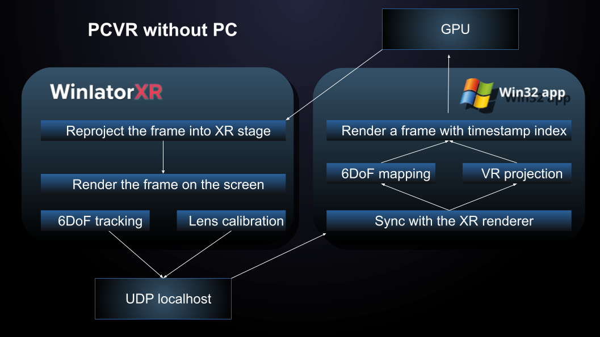
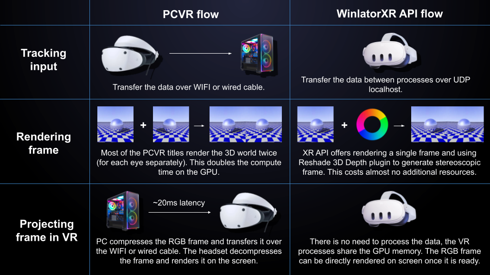
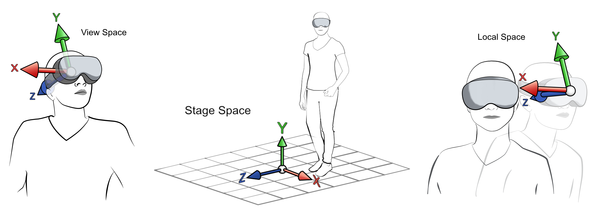

WinlatorXR's API provides 6DOF tracking data and controller inputs over UDP for use in games and mods within a container.
The XR API is an experimental and continuously evolving feature of WinlatorXR. As development progresses, multiple versions of the API are maintained to ensure long-term compatibility and to prevent existing projects from breaking as improvements and refinements are introduced. Because the API is still under active development, it is not yet designed to function as a complete replacement for the OpenXR runtime. At this stage, it must be implemented on a per-game or per-mod basis, allowing developers to selectively integrate XR functionality where needed.
Some features of XR API include:

Rendering flow between WinlatorXR and sandboxed Windows app

The major difference between PCVR and WinlatorXR API
The Windows app/game has to sent data on localhost:7278 as string of float numbers separated by space:
| Field | Type | Description |
|---|---|---|
| L_HAPTICS | Float | Left controller vibration duration (frames), this will be forwarded to bHaptics/ProTube accessory arm accessory (if available) |
| R_HAPTICS | Float | Right controller vibration duration (frames), this will be forwarded to bHaptics/ProTube accessory arm accessory (if available) |
| MODE_VR | Integer |
0 = Disable (no UDP data are sent), 1 = Enable VR, 2 = Screen mode (no automatic head tracking) 3 = Screen mode with head tracking mapped to mouse in 3DoF immersive mode |
| MODE_3D | Integer | 0 = No 3D, 1 = SBS, 2 = AER, -1 = User controlled |
| HMD_FOVX | Float | Custom horizontal FOV (degrees, if > 1) |
| HMD_FOVY | Float | Custom vertical FOV (degrees, if > 1) |
| Reference space count | Integer | Size of following array |
| Reference space data |
Space metadata Space index, Space type Reference pose X, Y, Z, QX, QY, QZ, QW |
Reference spaces have to be defined to be able to track headset and controllers Space index is defined by user (it cannot collide with controller index) Space type is defined by OpenXR's XrReferenceSpaceType Space-separated float values representing 6DOF reference pose (usually identity pose). • X/Y/Z = Position in 3D space • QX/QY/QZ/QW = Quaternion rotation |
| Controller count | Integer | Size of following array |
| Controller data |
Controller metadata Space index, Controller type, Controller grip Reference pose X, Y, Z, QX, QY, QZ, QW |
Controller are defined by action spaces and have to be defined to be able to track the controllers Space index is defined by user (it cannot collide with reference space index) Controller type is 1 for left hand and 2 for right hand Controller grip is 0 for aim pose and 1 for grip pose Space-separated float values representing 6DOF reference pose (usually identity pose). • X/Y/Z = Position in 3D space • QX/QY/QZ/QW = Quaternion rotation |
| Locate space count | Integer | Size of following array |
| Locate space request | Space index, Base space index |
This will fill requests for space poses to be located. This is implementation of OpenXR's xrLocateSpace Space index is index of controller action space (defined above) or 0 to track the headset. Base space is index is the reference space (defined above) in which coordinate system should the output pose be. |
It is recommended to not send always all the data. The message could be shorter e.g. when sending haptics only "0 1" could be sent.
3D mode defines which method is going to be used to render stereoscopic frames
| 3D Mode | Description |
|---|---|
| Side-by-Side (SBS) | The left half of the rendered frame is displayed to the left eye, and the right half is displayed to the right eye. |
| Alternate Eye Rendering (AER) | Set the blue frame sync pixel to: 0 when rendering the left eye, 255 when rendering the right eye Rapidly alternating between left and right frames creates the stereoscopic 3D effect. |
| User controlled | User can select in XR settings whenever SBS or flat mode should be used. |

Reference spaces explained by openxr-tutorial.com
The Windows app/game could sent data on localhost:7728 as string of codes separated by commas to simulate an input
| Field | Type | Description |
|---|---|---|
K |
Array of integers | XServer keycodes separated by comma which should be simulated to press The full list of supported keycodes could be found here. Eg: "K,50,38" presses SHIFT_L and A at the same time |
M |
Array of booleans | Ones and zeros separated by comma representing state of the mouse buttons in order: BUTTON_LEFT, BUTTON_RIGHT, BUTTON_MIDDLE, BUTTON_SCROLL_UP, BUTTON_SCROLL_DOWN. Eg: "M,1,0,0,0,0" triggers left mouse click |
WinlatorXR provides data on localhost:7872 (or localhost:7873 if second instance needed) as a string separated by space:
| Section | Fields | Description |
|---|---|---|
| Float Array |
Left controller thumbstick L_THUMBSTICK_X, L_THUMBSTICK_Y Right controller thumbstick R_THUMBSTICK_X, R_THUMBSTICK_Y Left controller pedal buttons L_TRIGGER, L_SQUEEZE Right controller pedal buttons R_TRIGGER, R_SQUEEZE Headset (HMD) HMD_IPD, HMD_FOVX, HMD_FOVY, HMD_SYNC, HMD_RECENTER |
Space-separated float values. • THUMBSTICK_X/Y = Analog input values • TRIGGER = Analog input value for trigger button • SQUEEZE = Analog input value for grip button • HMD_IPD = Interpupillary distance • HMD_FPS = Per frame updated frames per second • HMD_SYNC = Frame synchronization value * HMD_RECENTER = Count how many times recenter was called |
| Boolean States |
Left Controller L_GRIP, L_MENU, L_THUMBSTICK_PRESS L_THUMBSTICK_LEFT, L_THUMBSTICK_RIGHT L_THUMBSTICK_UP, L_THUMBSTICK_DOWN L_TRIGGER, L_X, L_Y Right Controller R_A, R_B, R_GRIP R_THUMBSTICK_PRESS R_THUMBSTICK_LEFT, R_THUMBSTICK_RIGHT R_THUMBSTICK_UP, R_THUMBSTICK_DOWN R_TRIGGER |
Boolean string containing characters: T = TRUE F = FALSE Values are transmitted in the exact order shown. |
| Int number | Count of locate space poses |
The size of locate space array |
| Locate spaces array |
Space indexes Space, Base space Tracked pose X, Y, Z, QX, QY, QZ, QW Space velocity velocityFlags linearVelocity (X, Y, Z) angularVelocity (X, Y, Z) |
These values are requested measurements of HMD, controllers and floor. Space is an index of a device which is being located (this could be headset or controller) Base space is an index of a coordinate system in which is the pose tracked (it could be relatively to floor, headset, etc.) Space-separated float values representing full 6DOF tracking data. • X/Y/Z = Position in 3D space • QX/QY/QZ/QW = Quaternion rotation Space velocity is defined by OpenXR's XrSpaceVelocityData |
| Boolean States | Immersive, SBS |
Boolean string containing characters: T = TRUE F = FALSE Immersive – 3DoF immersive mode active SBS – Side-by-side rendering enabled |